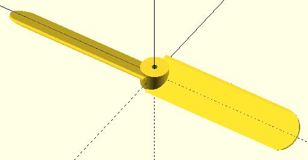
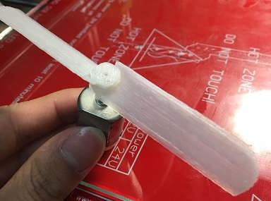
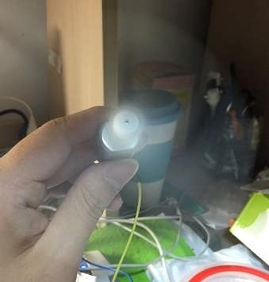
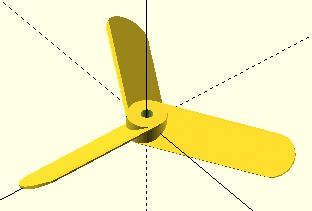
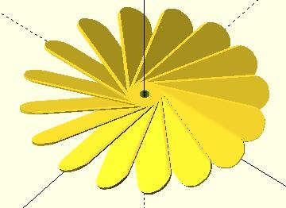

本来想做个空气桨双体船的，于是先做了一个空气桨，结果就成了小电风扇了。。。
模型效果图长这样：

打印出来的实物长这样：

旋转起来长这样：

很好玩吧~
实测发现风力还挺大的，夏天乘凉完全够用了~
至于OpenSCAD的代码，也不是很复杂，如下：
difference()
{
intersection()
{
union()
{
rotate([0,30,0])
union()
{
translate([-8,0,-1])
cube([16,50,1]);
translate([0,50,-1])
cylinder(r=8,h=1);
};
rotate([0,30,180])
union()
{
translate([-8,0,-1])
cube([16,50,1]);
translate([0,50,-1])
cylinder(r=8,h=1);
};
cylinder(r=5,h=10,center=true,$fn=100);
}
cube([200,200,6],center=true,$fn=100);
}
cylinder(r=1,h=10,center=true,$fn=100);
}
为了以后使用，我封装了一个制作空气桨的模块：
//fan(50,15,1,30,3,2,50);
//产生一个风扇，扇叶长为p_length，宽为p_width，厚度为p_thickness，
//扇叶倾角为p_angle，共有p_count个扇叶，中心轴的半径为p_shaft_r
//细致度为p_fn
module fan(p_length,p_width,p_thickness,p_angle,p_count,p_shaft_r,p_fn)
{
difference()
{
intersection()
{
union()
{
for(t_i=[0:p_count-1])
rotate([p_angle,0,360*t_i/p_count])
fan_leaf(p_length,p_width,p_thickness,p_fn);
cylinder(r=p_width*abs(cos(p_angle))/2,
h=p_width*abs(sin(p_angle))*2,center=true,$fn=p_fn);
};
cylinder(r=p_length,h=p_width*abs(sin(p_angle)),
center=true);
}
cylinder(r=p_shaft_r,h=p_width,center=true,$fn=p_fn);
}
}
//产生一片扇叶，长为p_length，宽为p_width，厚度为p_thickness
//细致度为p_fn
module fan_leaf(p_length,p_width,p_thickness,p_fn)
{
p_length=p_length-p_width/2;
union()
{
translate([0,-p_width/2,-p_thickness/2])
cube([p_length,p_width,p_thickness]);
translate([p_length,0,-p_thickness/2])
cylinder(r=p_width/2,h=p_thickness,$fn=p_fn);
};
}
比如要创建一个3叶桨，可以如下：
fan(50,15,1,30,3,2,50);
效果如下：

比如要创建一个16叶桨，可以如下：
fan(50,15,1,30,16,2,50);
效果如下：

都快成涡轮了。。。。